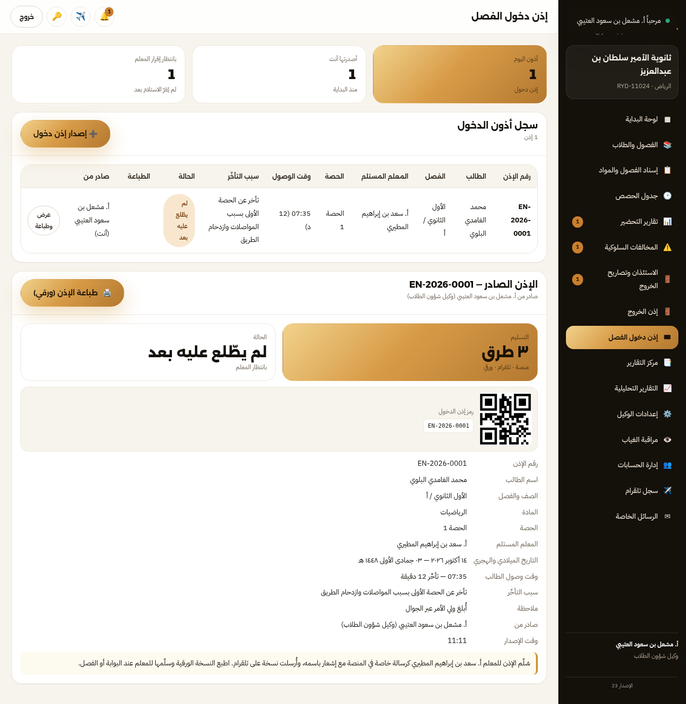

دليل وكيل شؤون الطلاب
من ضبط الإعدادات ونسب الحرمان… إلى الفصول والإسناد والجدول… ثم المتابعة اليومية (تحضير · مخالفات · استئذان) والتقارير الرسمية.
دورك ومسؤولياتك في المنصة
ما الذي يخصّك وحدك، وما يشاركك فيه غيرك — تعرف بالضبط أين تبدأ.
أنت وكيل شؤون الطلاب: حلقة الوصل بين إدارة المدرسة والمعلمين من جهة، وبين الطلاب وأولياء أمورهم من جهة أخرى. في منصة تابعني، دورك هو الأوسع بعد المدير: أنت من يضبط فصول الطلاب، ويوزّع الإسناد، ويرفع الجدول، ويتابع التحضير، ويقفل دائرة المخالفات، ويمنح الاستئذان، ويضبط نسب الحرمان، ويوقف/يفعّل حسابات الطلاب.
وحدة الفصول والطلاب
استيراد الطلاب، إسكانهم في الفصول، النقل الفردي والجماعي، وسجل النقل.
الإسناد والجدول
إسناد المواد للمعلمين، تثبيت الإسناد، جدول الحصص وقاعدة الإغلاق.
المتابعة اليومية
تقارير التحضير، المخالفات، الاستئذان وتصاريح الخروج، ومراقبة الغياب.
الإعدادات الحسّاسة
نسب الحرمان لكل مادة، وحسابات الطلاب (إيقاف/تفعيل جماعي).

| العمل | أنت | الشرح |
|---|---|---|
| الفصول والطلاب والنقل | صاحب الصلاحية | لا يظهر للوكيل إلا ما يخصّ مدرسته. |
| الإسناد والجدول | صاحب الصلاحية | والمدير يطّلع على التقارير. |
| المخالفات | تُحوَّل إليك | المعلم يسجّل ← التوجيه يعالج ← أنت تقرّر (خصم/لائحة) وتغلق. |
| الاستئذان | أنت من يمنح | التوجيه يطلب، وأنت تمنح التصريح بالباركود. |
| حسابات الطلاب | إيقاف/تفعيل جماعي | المدير يشاركك، والمشرف العام يدير المستخدمين. |
أول خطوة: إعداداتك ونسب الحرمان
الإعدادات التي تحدّد كل الأرقام بعده: نسب الحرمان والفصول الدراسية.
افتح «إعدادات الوكيل» واضبط نسب الحرمان قبل أي شيء آخر:
النسبة العامة للحرمان
النسبة الافتراضية لكل المواد (٢٥٪ مثلًا) — تُستخدم للمواد التي لم تحدّد لها نسبة خاصة.
نسبة لكل مادة (الأدق)
حدّد نسبة خاصة لكل مادة على حدة (مثال: القراءة ٣٠٪ · الرياضيات ٢٥٪ · البدنية ٤٠٪). النظام يحسب الحرمان لكل مادة على حدة.
الفصول الدراسية
تاريخ بداية ونهاية كل فصل، ليُحسب النطاق الزمني للتقارير (يومي · أسبوعي · شهري · نهاية فصل) بشكل صحيح.

الفصول والطلاب
استيراد الطلاب، إسكانهم، والنقل — أساس كل شيء بعده.
وحدة «الفصول والطلاب» هي مستودع بيانات الطلاب. العمل فيها على ثلاث مراحل:
تحديد الفصول
أنشئ فصول مدرستك بحسب المراحل المسجّلة، واسمِها بصيغة ثابتة (مثال: الأول الثانوي / أ) لتتفق معها الجداول والتقارير.
استيراد الطلاب
نزّل قالب الاستيراد (CSV/Excel) واملأ الأعمدة: اسم الطالب · رقم الهوية · جوال ولي الأمر · المرحلة · الصف · الفصل، ثم ارفع الملف فيُسكَّن كلا طالب في فصله.
النقل والتحويل
نقل فردي لطالب أو نقل جماعي لعدد من الطلاب إلى فصل آخر، مع سجل نقل يحفظ من نقل، لمن، ومتى — بيدك وحدك.

إسناد المواد وتثبيت الإسناد
من يعلّم ماذا — ثم تثبيته ليظهر لكل معلم فصوله فقط.
في «إسناد المواد» تربط كل معلم بالمادة والفصول التي يعلّمها، بحسب مواد مرحلته فقط (لا تظهر إلا مواد مراحل مدرستك).
اختيار المعلم
من قائمة معلمي المدرسة (المستوردين من نور أو المضافين يدويًا).
اختيار المادة والفصول
بقوائم منسدلة، مع إمكانية إسناد المعلم لأكثر من فصل في المادة نفسها.
التثبيت
اضغط «تثبيت الإسناد» — بعدها لا يرى المعلم في شاشة التحضير إلا فصوله ومواده، ولا يستطيع التحضير لفصل ليس له.

جدول الحصص وقاعدة الإغلاق
عدد الحصص، دقائقها، ومتى يُقفل التحضير.
ضبط الحصص
حدّد عدد حصص اليوم (مثال: ٧ حصص) ووقت بداية اليوم ومدة الحصة.
قاعدة الإغلاق
اختر قاعدة إغلاق التحضير: قبل منتصف الحصة أو قبل نهايتها — وهي التي تمنع المعلم من التحضير في توقيت خاطئ، وتُظهر من تحضّر ومن تأخر.
رفع الجدول
ارفع جدول الحصص (Excel/CSV أو ملف PDF) ليُسنَد كل معلم إلى حصصه تلقائيًا، أو أدخِل الحصص يدويًا.

تقارير التحضير ومتابعة المعلمين
من حضر، ومن تأخر، ومن لم يحضّر — بالأرقام.
وحدة «تقارير التحضير» تعطيك صورة يومية وأسبوعية عن انتظام المعلمين وحصصهم، وهي أول ما يُطلب منك في الاجتماعات الإدارية.
| التقرير | ما يجيب عنه |
|---|---|
| تحضير اليوم | مَن حضّر حصصه ومن لم يحضّر، بحسب الجدول الفعلي لكل معلم. |
| التأخر في التحضير | الحصص التي أُغلقت في توقيت متأخر (بحسب قاعدة الإغلاق). |
| تفعيل المعلمين | نسبة استخدام المنصة لكل معلم: متميّز · منتظم · ضعيف التفعيل · لم يفعّل. |
| الكشوف القابلة للطباعة | كشف لكل فصل/مادة مع الترويسة الرسمية والباركود والتوقيعات. |

المخالفات السلوكية
دورك في الحلقة الأخيرة: القرار ثم الإغلاق.
دورة المخالفة تمرّ بأربع محطات، وأنت المحطة الثالثة والرابعة:
| الترتيب | الخطوة | المسؤول |
|---|---|---|
| 1 | تسجيل المخالفة | المعلم (وصف المخالفة، تاريخها، الطالب). |
| 2 | المعالجة والتوجيه | موجّه التوجيه والإرشاد (رد/إجراء توجيهي). |
| 3 | القرار الإداري | أنت: خصم درجة أو إحالة للائحة حسب درجة المخالفة. |
| 4 | الإغلاق والتقرير | أنت: إغلاق المخالفة، ثم طباعة تقرير مفصل بترويسة المدرسة. |

الاستئذان وتصاريح الخروج
من يخرج، ولماذا، وبأي إثبات.
الطلب
يُسجَّل الاستئذان من التوجيه والإرشاد أو من حساب الطالب، بمبرر الزيارة أو الخروج ووقته.
المنح
أنت من يمنح الاستئذان: من المنصة، أو من الجوال، أو برد عبر تلقرام.
تصريح الخروج
يُصدر تصريح خروج بباركود يحمل بيانات الطالب ووقت الخروج والتاريخ (هجري وميلادي) — يُمسح عند البوابة ويُحفظ في السجل.

إذن دخول الفصل (الطالب المتأخر)
الطالب الذي يصل متأخرًا لا يُترك بلا أثر: تُصدر له إذن دخول فصل مُرقّمًا
(EN-YYYY-NNNN) فيه سبب التأخّر إلزاميًا، ويُسلَّم لمعلم الحصة فورًا.
أصدر الإذن
من «إذن دخول الفصل» ← «إصدار إذن دخول». اختر الطالب فيُملأ فصله تلقائيًا وتظهر معلمو فصله مميّزين بنجمة ★.
اكتب سبب التأخّر
وفيه قوالب جاهزة، ويمكن إضافة المادة والحصة ووقت الوصول ومدة التأخّر وملاحظة للمعلم.
التسليم الثلاثي
فور الإصدار: رسالة خاصة للمعلم وإشعار باسمه + رسالة تلقرام + نسخة ورقية تطبعها بترويسة المدرسة وباركود.
تابع الإقرار
يعرض السجل الحالة: «لم يطّلع عليه بعد» ← «اطّلع عليه المعلم» ← «أقرّ المعلم بالاستلام»، ويصلك الإقرار إشعارًا.

مراقبة الغياب والمحرومون
من تجاوز الحد، ومن يحتاج تدخّلًا عاجلًا.
وحدة «مراقبة الغياب» تعرض الطلاب المتأخرين والغائبين بحسب النطاق (يوم/أسبوع/شهر/فصل)، وتحسب الحرمان لكل مادة وفق النسب التي ضبطتها، مع قائمة الطلاب الذين بلغوا الحد.

حسابات الطلاب: إيقاف وتفعيل جماعي
ضغطة واحدة لكل المدرسة أو لصف محدّد.
في وحدة «إدارة الحسابات» تدير حسابات الطلاب (والمدير يشاركك):
- إيقاف كل الطلاب أو تفعيل كل الطلاب بضغطة واحدة — لكل المدرسة أو لفصل محدّد.
- عكس حالة المحدّدين، وإيقاف/تفعيل حساب فردي.
- تصدير كشف الحسابات (CSV) لأرشفته أو تسليمه.

تقاريرك الرسمية وأين تُطبع
كل تقرير بترويسة المدرسة وبباركود تحقّق.
| التقرير | التوقيت | الجهة |
|---|---|---|
| كشف تحضير فصل/مادة | أسبوعيًا | الإدارة والمعلم |
| تقرير الغياب والتأخر | يومي/أسبوعي | الإدارة وولي الأمر |
| سجل المخالفات | شهري/عند الحاجة | التوجيه والإدارة |
| المحرومون بحسب المادة | قبل الاختبارات | الإدارة والرصد |
| تصاريح الخروج | يوميًا | البوابة والأمن |
| تقارير دورية شاملة | نهاية الفصل | الإدارة العامة |

TBN-XXX-00001-YYYYMMDD وباركود؛ إن شكّ أحد في ورقة، يُمسح الباركود فيُتحقق من التقرير. وصيغة الطباعة تُبنى من إعدادات «ترويسة التقارير» التي يضبطها المدير.قوائم تحقق سريعة
ابدأ يومك وأسبوعك وعامك من هذه القوائم.
بداية العام
الإعدادات ونسب الحرمان ← الفصول ← استيراد الطلاب ← الإسناد وتثبيته ← الجدول وقاعدة الإغلاق ← توزيع المناوبة مع وكيل المعلمين.
كل أسبوع
تقارير التحضير والتأخر ← المخالفات غير المغلقة ← قائمة المحرومين ← إشعار أولياء الأمور.
كل يوم
الطلاب بلا إسكان ← طلبات الاستئذان المعلّقة ← الغائبون والمتأخرون ← تصاريح الخروج.
قبل الاختبارات
تثبيت الحرمان بحسب كل مادة ← طباعة الكشوف الرسمية بالتوقيعات ← إشعار أولياء أمور الطلاب المحرومين.

الدعم والمراجع
حيث تجد بقية الأدلة وجهات التواصل.
| المرجع | لماذا |
|---|---|
| دليل منصة تابعني — للمدارس | الشرح الكامل لكل خدمة وكل دور في المنصة. |
| دليل المدير المختصر | خطوات اعتماد الحسابات وأول خمس خطوات بعد التسليم. |
| دليل الاستخدام داخل المنصة | كل وحدة فيها تلميح وعنوان يشرح دورها في سطر. |
تابعني — منصة الخدمات التعليمية
دليل وكيل شؤون الطلاب · الإصدار 1.0 · أكتوبر 2026
هذا الدليل يصف النموذج الأولي العامل داخل المتصفح. الأرقام لاتينية، والواجهة عربية RTL بطابع الهوية الذهبية (ذهبي #CE9433 · أونيكس #14100A · كريمي #F7F4ED).